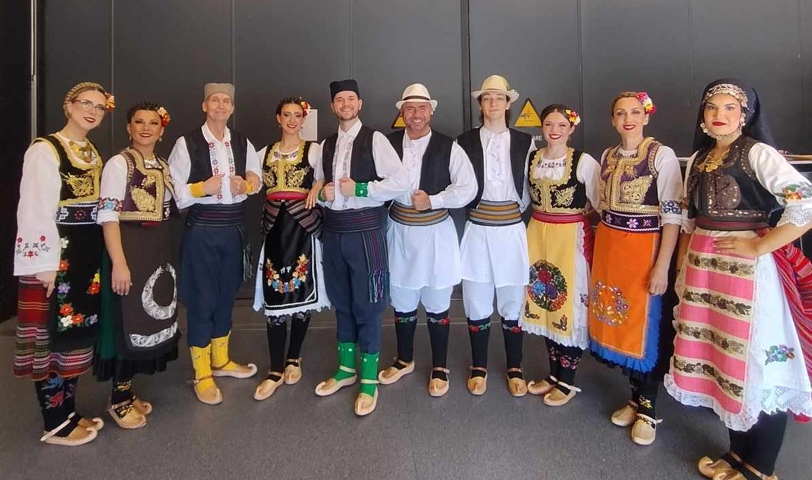
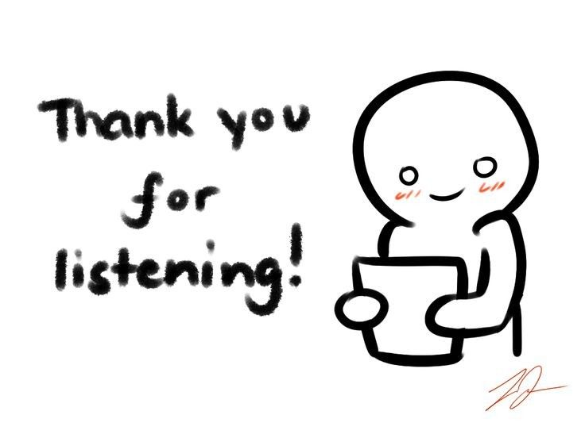

Julija Cvijanovic // Јулија Цвијановић
I am an UX Design student based in Oslo, Norway. In my free time, back in Norway, I would go on hikes with friends/family and Caesar, my dog, and read as much as I can. Besides studies, I work in Norway's biggest bookshop franchise called "ARK" (litteraly translates to "paper"), so if you need any book recommendations, feel free to ask any time!
Since I'm currently on an exchange at SNU in Seoul, South-Korea, I use my free time to explore, via foods and sightseeing.
- Follow my progress as a designer on my
- One of my favorite website are PointerPointer
- My favorite food is Пуљнене Паприке (Filled Bell Peppers), a dish from Serbia, my parent's home country.
- Back in Norway, I dance for the Serbian Folkdance group "RAS":
Get to know me better!


^ Here is a video of a preformance, in 2025 (Bærum, Norway). Click me to watch!
Exercises
- Week 2 - ASCII Town
These are my projects from SNU Semester 2026!
